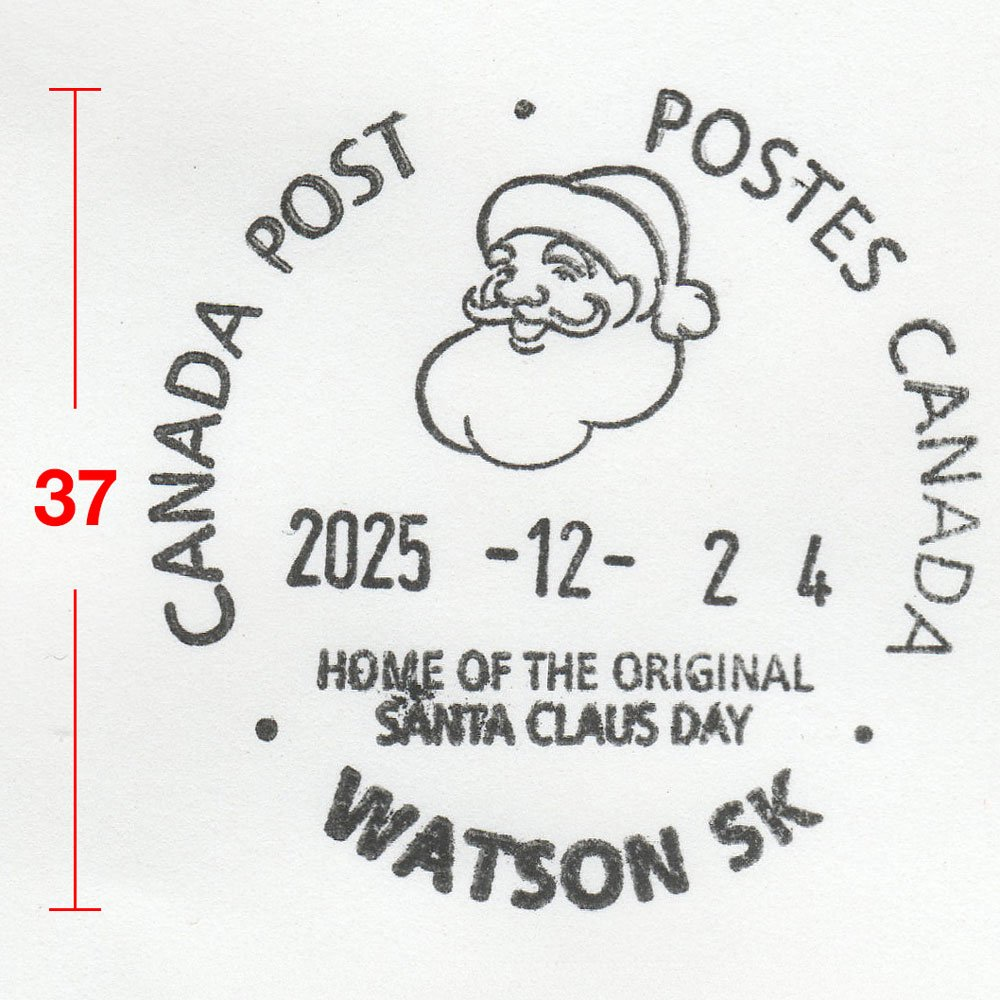

Watson PO pictorial cancel
Home of the Original Santa Claus Day
- Status
- Active
- Run dates
- 2020-01-01 to 2031-12-31
- Design
- "HOME OF THE ORIGINAL SANTA CLAUS DAY"; Santa Claus, human
- Ink colour
- Black
- Designer
- Unknown
- Post office
- Watson PO
103 Railway Ave
Wsatson, SK
S0K 4V0 - Subjects
- Christmas, festivity, human, Santa Claus
Collect it by mail. Send your stamped covers, with a stamped return envelope, to the post office address above. How to collect pictorial cancels by mail · en français
 Englefeld POHome of the Hogfest
Englefeld POHome of the Hogfest Spalding POWhere friends meet
Spalding POWhere friends meet Mozart POMozart silhouette, maple leaf, musical note
Mozart POMozart silhouette, maple leaf, musical note Wadena POInc. 1912
Wadena POInc. 1912 Archerwell POWhere You
Archerwell POWhere You Watrous POCBK Radio 1939
Watrous POCBK Radio 1939